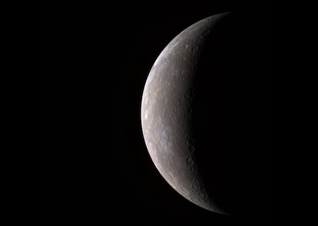

Mercurio
Planeta Mercurio

Mercurio es el planeta más pequeño del sistema solar. Simplemente, es un poco más grande que la luna de la tierra, es el planeta más cercano al sol, pero no es realmente el más cálido. Junto con Venus, la tierra y Marte, Mercurio es uno de los planetas rocosos. Tiene una superficie sólida que está cubierta de cráteres, tiene una admósfera delgada y no tiene ninguna luna.
Este planeta pequeño da vueltas lentamente comparado con la Tierra, por lo tanto, un día dura un largo tiempo. A Mercurio le lleva 59 días de la Tierra hacer una rotación completa. Un año en Mercurio pasa rápido. Debido a que es el planeta más cercano al Sol, no le lleva mucho tiempo cubrir toda la circunferencia, completa una vuelta alrededor del Sol en solo 88 días de la Tierra. ¡Si vivieras en Mercurio, tendrías una fiesta de cumpleaños cada tres meses!
Un día en Mercurio no es como un día aquí en la Tierra. Para nosotros, el Sol sale y se pone todos los días. Debido a que Mercurio gira lentamente y tiene un año corto, le lleva mucho tiempo al Sol salir y ponerse allí, Mercurio solo tiene un amanecer cada 180 días de la Tierra. ¿No te parece rarísimo?
Estructura y superficie
- Es el planeta más pequeño de nuestro sistemasolar.
- Tiene una atmósfera poco densa.
- Es un planeta terrestre: es pequeño y rocoso.
Tiempo en Mercurio
- Su día dura 59 días terrestres.
- Su año dura 88 días terrestres.
Los vecinos de Mercurio
- No tiene Lunas.
- Es el planeta más cercano al sol.
- Tiene a Venus de planeta vecino.
Breve historia
- Se conoce a Mercurio desde la antigüedad, ya que es visible sin necesidad de usar telescopios avanzados.
- Ha recibido la visita de dos naves espaciales: Mariner 10 y MESSENGER.
¿Qué aspecto tiene Mercurio?
Mercurio es de un color gris claro.

El cráter grande, con forma de estrella hacia la parte inferior de la esfera se llama Debussy.